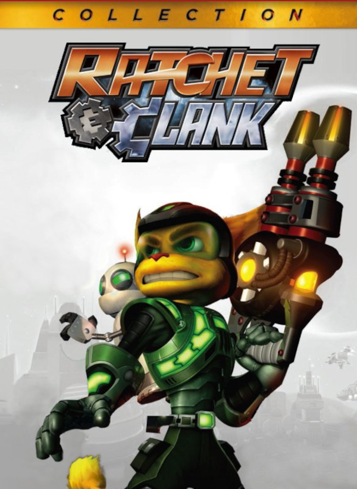

|  | |
| Playtime | Not Played |
| Last Activity | Never |
| Added | 5/7/2025 0:36:18 |
| Modified | 5/7/2025 0:36:24 |
| Completion Status | Not Played |
| Library | Playnite |
| Source | |
| Platform | Sony PlayStation 3 |
| Release Date | 2014 |
| Community Score | |
| Critic Score | 83 |
| User Score | |
| Genre | Platform |
| Developer | Idol Minds |
| Publisher | Sony Computer Entertainment |
| Feature | Multiplayer Single Player |
| Links | Wikipedia |
| Tag | [HLTB] 30 to 40 hours [People] composer: David Bergeaud |
Ratchet & Clank Collection (known as The Ratchet & Clank Trilogy in Europe and Ratchet & Clank 1+2+3 in Japan) is a 2012 video game compilation developed by Idol Minds and published by Sony Computer Entertainment for the PlayStation 3. It includes high-definition remasters of the first three games of the Ratchet & Clank series originally developed for the PlayStation 2. A port developed by Mass Media for the PlayStation Vita was released in 2014.
The game, along with the God of War Saga and the inFamous Collection, are the first in Sony's new line of PlayStation Collections released on August 28, 2012.
The PlayStation 3 version received generally positive reviews. The collection was praised for the quality of the stereoscopic 3D modes, but was criticized for its dated graphics and lack of new content, particularly the unchanged difficulty level. The Vita version received generally positive reviews. While the port's smooth framerate was complimented, the technical issues were heavily criticized.
The core game and story for all games from the original trilogy remains unchanged with the remastered versions. For the remastering, all three games run at 720p with optional stereoscopic 3D support. All three games feature a fixed frame rate of 60 frames per second in normal mode, while in 3D mode the games run at 30 frames per second. It also includes the multiplayer of Ratchet & Clank: Up Your Arsenal (up to eight players) over the PlayStation Network, and included, full trophy support. All of the games in this collection have been re-rated E10+ by the ESRB; they were originally rated T since the E10+ rating did not exist at the time these games were released on the PlayStation 2.
A HD collection for the Ratchet & Clank series was first spotted on March 2, 2012, after Amazon France listed Ratchet & Clank HD Collection on its website, and was officially confirmed by Sony on March 15.
A demo for Sly Cooper: Thieves in Time is included in the North American version of the game.
Ratchet & Clank Collection received generally positive reviews. IGN rated the game as an 8.5 out of 10, giving particular credit to the gameplay. The majority of praise for the game came from the impressive use of stereoscopic 3D that provided a more dynamic gaming experience. It did draw some criticism for its aged and poor graphic quality, and for not offering anything new. Metacritic scored the game at 83 out of 100 from 40 critics, with mostly positive reviews.
The PlayStation Official Magazine - UK gave the game an 8 out of 10 and praised the inclusion of multiplayer that many PlayStation 2 players may have missed out on the first time around. However, it criticised the quality of the cut-scenes and game play for being in their original format and resolution.
The Guardian.co.uk praised the game, stating that they had aged well and offered great value to gamers. Gaming Bolt was one of the few sites to mention the 3D options of the game in a review. They claimed that it was a stable experience but did not add anything to the collection and questioned why it was added to the game.
Digital Spy gave the game four out of five stars stating that the gameplay hadn't aged and that, thanks to Idol Minds, the graphics were equally good. It also stated that they would've liked to see more bonus content for Ratchet & Clank fans.
Eurogamer rated the collection as 9/10 and stated that criticisms were "hard to find and even harder to make stick." Game Informer awarded the collection a 9.25 out of ten, particularly praising Up Your Arsenal's control system.
The Vita version received generally positive reviews, garnering an average review score of 76 on Metacritic from 23 critic reviews.